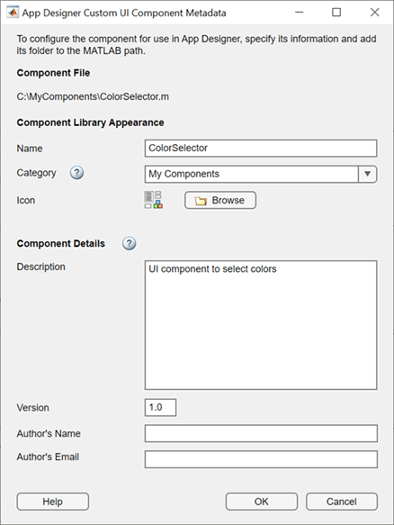
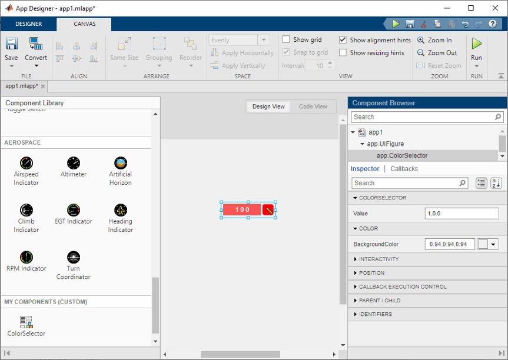
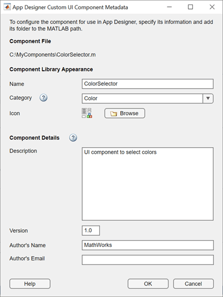
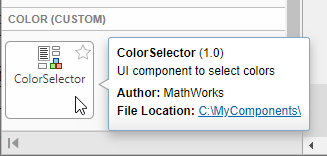

Configure Custom UI Components for App Designer
Starting in R2021a, when you create a custom UI component, you can configure your component for app creators to use interactively in App Designer. After you configure your UI component, app creators can add the component to the Component Library and can interact with the component on the App Designer canvas and in the Property Inspector.
Follow these configuration steps if you have created a custom UI component, either
interactively in App Designer or programmatically as a subclass of the matlab.ui.componentcontainer.ComponentContainer base class, and you would
like to use it in either of these ways:
Access your UI component from the App Designer Component Library and interactively use it to create an App Designer app.
Share your UI component for others to use interactively to create apps in App Designer.
For more information about creating a custom UI component, see:
Create a Simple Custom UI Component in App Designer to create a component interactively
Develop Custom UI Components Programmatically to create a component programmatically
Custom UI Component Prerequisites
To allow your custom UI component to be used interactively in App Designer, there are some requirements that your UI component class must satisfy.
To successfully configure your UI component, the setup method of
your UI component class cannot have required input arguments. Also, the component
class cannot dynamically add additional UI components to its parent container. The
only exception is that the class can dynamically add a
ContextMenu component in the parent figure.
For a public property of your component class to appear in the Property Inspector, you must specify its type or assign a default value to it. If the property is an enumeration, you must both specify its type and assign it a default value. In addition, the property type must belong to the list of types supported by App Designer. This table shows the allowable property types and their appearance in the Property Inspector.
| Property Category | Supported Data Types | Property Inspector Input |
|---|---|---|
| Numerical | Scalars or arrays of type single,
double, int8,
int16, int32,
int64, uint8,
uint16, uint32, or
uint64 | Edit field |
| Logical | logical | Check box |
| Text | Scalars of type string, scalars or row vectors
of type char, and scalars or vectors of type
cell | Text area |
| Enumeration | enumeration | Editable drop-down list |
For more information on specifying property types and assigning default values, see:
Create Public Properties for Custom UI Components in App Designer for components created interactively
Manage Properties of Custom UI Components Programmatically for components created programmatically
Configure Custom UI Component
The way you configure your custom UI component for use in App Designer depends on
whether you created the component interactively in App Designer or programmatically
as a subclass of the ComponentContainer base class.
Components created in App Designer — Open the component in App Designer. In the File section of the Designer tab, click Configure.
Alternatively, call the
appdesigner.customcomponent.configureMetadatafunction from the MATLAB® Command Window and pass it a path to your component MLAPP file.Components created programmatically — Call the
appdesigner.customcomponent.configureMetadatafunction from the MATLAB Command Window and pass it a path to your component class file.For example, to configure a custom UI component saved as
ColorSelector.min the folderC:\MyComponents, use this command:appdesigner.customcomponent.configureMetadata('C:\MyComponents\ColorSelector.m');
Following these steps opens the App Designer Custom UI Component Metadata dialog box. This dialog box allows you to specify metadata about the component. App Designer uses this metadata to display the component in the Component Library.

The dialog box prepopulates all of the required metadata from the component class definition. You can edit the prepopulated metadata using the form. Select OK to configure the UI component.
After you select OK, the function creates a folder named
resources in the same folder as your custom component file.
Inside the resources folder, the function generates a file named
appDesigner.json. This file contains the metadata you
provided in the dialog box, in addition to other metadata MATLAB needs to make your component available in App Designer.
Note
Do not modify the appDesigner.json file by hand. To
change any custom UI component metadata, reconfigure the component.
View Configured UI Component in App Designer
After you configure your custom UI component, you can view and use it in App
Designer. For the UI component to appear in the App Designer Component
Library, you must add the folder containing the component file and
generated resources folder to the MATLAB path.
For example, if you have create a ColorSelector custom
component, save it to a folder named MyComponents, and configure
its App Designer metadata, follow these steps to use the component in App Designer:
Add the
MyComponentsfolder to the MATLAB path by following the steps in Change Folders on Search Path.Open App Designer and select Blank App.
Drag the component from the Component Library onto the App Designer canvas.
The Property Inspector for the component lists the public properties and callbacks of the component.

Note
Avoid making changes to a custom component file while using the component in an App Designer app, as doing so might lead to errors or unexpected behavior.
Reconfigure Custom UI Component
Reconfigure a previously configured UI component when:
You want to change existing UI component metadata and update how the component is displayed in the App Designer Component Library.
You have made changes to the UI component position or layout in your class definition.
To reconfigure your UI component, follow the same steps in the Configure Custom UI Component section. The App Designer Custom UI Component Metadata dialog box opens with the existing metadata prepopulated.
Update the metadata, and then select OK.

Go back to App Designer. The component appears in the Component Library with the updated configuration options.

Remove UI Component from App Designer
To remove a custom UI component from the App Designer Component
Library, use the appdesigner.customcomponent.removeMetadata function.
Call the function by passing it the path to your component file. The function
removes the metadata for the UI component from the
appDesigner.json file inside the resources
folder and removes the component from the App Designer Component
Library.
appdesigner.customcomponent.removeMetadata('C:\MyComponents\ColorSelector.m');After you remove the App Designer metadata for a custom UI component, any App Designer apps that use it do not load correctly. To continue editing an app that uses the UI component, reconfigure the component before you open the app.
Share Configured UI Component
After configuring a UI component, you can share the component for others to use in
App Designer. You can either share the relevant files directly or package the
component as a toolbox. In either case, you must also share the generated
resources folder.
Share UI Component Files Directly
To share a configured UI component directly with a user, create and share a folder with these contents:
The UI component class file
The generated
resourcesfolder
Instruct the user you are sharing the UI component with to add the shared folder to the MATLAB path.
Package UI Component as a Toolbox
Package your UI component as a toolbox by following the steps in Create and Share Toolboxes. Make sure the folder you package as a toolbox has these contents:
The UI component class file
The generated
resourcesfolder
You can share the resulting .mltbx file directly with your
users. To install it, they must double-click the .mltbx file
in the MATLAB
Current Folder browser.
Alternatively, you can share your UI component as an add-on by uploading the
.mltbx file to MATLAB Central File
Exchange. Your users can find and install your add-on from the
MATLAB Toolstrip by performing these steps:
In the MATLAB Toolstrip, on the Home tab, in the Environment section, select Add-Ons
 .
.Find the add-on by browsing through available categories on the left side of the Add-On Explorer window. Alternatively, use the search bar to search for an add-on using a keyword.
Click the add-on to open its detailed information page.
On the information page, click Add to install the add-on.
Troubleshoot Missing Custom UI Component
To open an app that contains a custom UI component, the component file and
generated resources folder must be on the MATLAB path. If App Designer cannot load a custom UI component, it will
display a warning dialog box when the app is opened. If you encounter this dialog
box when opening an app, follow these steps to load the missing component:
Make sure that the UI component file and generated
resourcesfolder with the component metadata are in a single folder.Add the folder containing the component file and
resourcesfolder to the MATLAB path by following the steps in Change Folders on Search Path.Reopen the app that contains the custom UI component. The app and component should now load as expected.